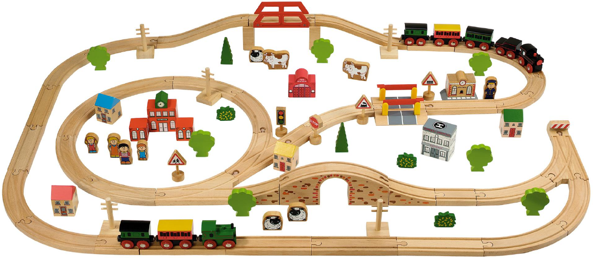
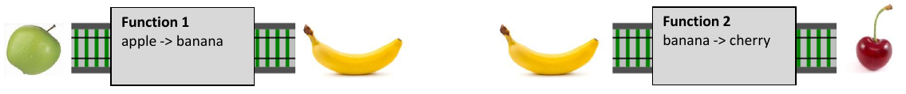
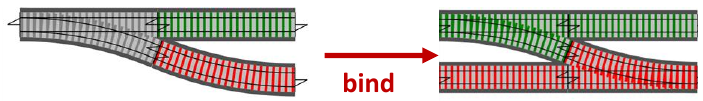
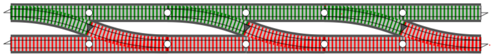
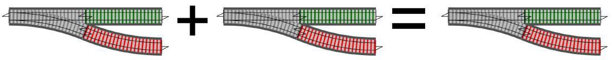

<!DOCTYPE html>
<html lang="en">
  <head>
    <meta charset="utf-8" />
    <meta name="viewport" content="width=device-width, initial-scale=1.0, maximum-scale=1.0, user-scalable=no" />

    <title>reveal-md</title>
    <link rel="stylesheet" href="./dist/reveal.css" />
    <link rel="stylesheet" href="./dist/theme/black.css" id="theme" />
    <link rel="stylesheet" href="./css/highlight/zenburn.css" />

  </head>
  <body>
    <div class="reveal">
      <div class="slides"><section  data-markdown><script type="text/template"><style>
footer, .footer {
  font-size: 50%;
  color: gray;
}
strong {
  color: #d67500;
}
em {
  color: yellow;
}
.reveal pre code {
  max-height: 80%;
}
.reveal h1, .reveal h2, .reveal h3, .reveal h4, .reveal h5, .reveal h6 {
  text-transform: none;
}
.emoji {
  font-family: apple color emoji,segoe ui emoji,noto color emoji,android emoji,emojisymbols,emojione mozilla,twemoji mozilla,segoe ui symbol;
}
.image-container {
  position: relative;
  text-align: center;
  color: darkred;
}
.centered-text {
  position: absolute;
  top: 50%;
  left: 50%;
  transform: translate(-50%, -50%);
}
.arrow-text {
  font-size: 50%;
}
.arrow {
  margin-top: -10px;
  transform: scale(1.5,1);
}
.m0 {
  margin: 0 !important;
}
code {
  padding: 0 0.1em;
  background: #3f3f3f;
  color: #dcdcdc;
}
.half-image {
  display: inline-block;
  width: 48%;
}
</style>

## Functional Composition


</script></section><section  data-markdown><script type="text/template">
Inspired by the talk _The Power Of Composition_ by&nbsp;Scott&nbsp;Wlaschin
([video](https://youtu.be/vDe-4o8Uwl8),
[slides](https://www.slideshare.net/ScottWlaschin/the-power-of-composition))
</script></section><section ><section data-markdown><script type="text/template">
## The philosophy of composition
- All pieces are designed to be connected
- Connect two pieces together and get another "piece"
   that can still be connected
- The pieces are reusable in many contexts

<p>
  
  
</p>
</script></section><section data-markdown><script type="text/template">
## Philosophy in short
- connectable
- no adapters
- reusable parts

<p>
  
  
</p>
</script></section><section data-markdown><script type="text/template">
### For composition to work properly
- immutable data 
- self contained:
    - no side-effects
    - no I/O
    - no globals
    - etc.
</script></section></section><section ><section data-markdown><script type="text/template">
## Functions


</script></section><section data-markdown><script type="text/template">
## Reduce/Unify Parameter Count

```ts
const f = (x, y, z) => x + y * z
// partial application of f
const p = (x, y) => z => f(x, y, z)
// curried f
const c = x => y => z => f(x, y, z)
```

&shy;<!-- .element: class="fragment footer" -->
Parameters of outer functions are captured by inner functions (closures).
</script></section></section><section  data-markdown><script type="text/template">
## Composition Operators
</script></section><section  data-markdown><script type="text/template">
### Basic Composition

<div class="image-container">
  
  <div class="centered-text">
    <div class="arrow-text">compose</div>
    <div class="arrow">←</div>
  </div>
</div>

<div class="image-container">
  
  <div class="centered-text">
    <div class="arrow-text">pipe</div>
    <div class="arrow">→</div>
  </div>
</div>

```ts
const compose = (g, f) => x => g(f(x))
const pipe    = (g, f) => x => f(g(x))
```
</script></section><section  data-markdown><script type="text/template">
## How do we compose these?


<ol>
  <li>
    <p>
      bind
      
      
    </p>
  </li>
  <li>
    <p>
      kleisli
      
    </p>
  </li>
</ol>
</script></section><section ><section data-markdown><script type="text/template">
### bind

 <!-- .element: style="width: 80%;" -->
</script></section><section data-markdown><script type="text/template">
### bind


</script></section><section data-markdown><script type="text/template">
### bind


</script></section><section data-markdown><script type="text/template">
### bind

  

#### Implementations

```ts
const bindPromise = f => p => p.then(f)
const bindMaybe = f => m => isNullOrUndefined(m) ? m : f(m)
```

#### Example
```ts
const prop = key => bindMaybe(obj => obj[key])
const getStateCode = pipe(prop('address'), prop('state'))
getStateCode({ address: { state: 'ny' } }) // ny
getStateCode({}) // undefined
```
</script></section></section><section ><section data-markdown><script type="text/template">
### Kleisli Composition


#### Implementation (Maybe)

```ts
// bind: Maybe
const bind = f => m => isNullOrUndefined(m) ? m : f(m)

// Kleisli Composition: Maybe
const kc = (current, next) => (ctx) => bind(next)(current(ctx))
```
<!-- .element: style="width: 93%;" -->
</script></section><section data-markdown><script type="text/template">
#### Kleisli Composition in Action

##### Web Server Example
```ts
const app = choose([
  kc(
    GET,
    choose([
      kc(path('/hello'), ok('Hello')),
      kc(path('/goodbye'), ok('Goodbye')),
    ]),
  ),
  kc(
    POST,
    choose([
      kc(path('/hello'), ok('Hello POST')),
      kc(path('/goodbye'), ok('Goodbye POST')),
    ]),
  ),
])
```
</script></section><section data-markdown><script type="text/template">
### Choose HTTP Method

```ts
/**
 * The choose combinator is implemented such that it will
 * execute each webpart in the list until one returns success.
 */
declare function choose(webParts: WebPart[]): WebPart;

const app = choose([
  kc(GET, choose([...])),
  kc(POST, choose([...])),
])
```
<!-- .element: style="width: 91%;" -->


</script></section><section data-markdown><script type="text/template">
### Complete Railway

```ts
const app = choose([
  kc(GET, choose([
    kc(path('/hello'), ok('Hello')),
    kc(path('/goodbye'), ok('Goodbye')),
  ])),
  kc(POST, choose([
    kc(path('/hello'), ok('Hello POST')),
    kc(path('/goodbye'), ok('Goodbye POST')),
  ])),
])
```


</script></section><section data-markdown><script type="text/template">
### [Source Code](https://github.com/maiermic/composition-presentation/tree/master/examples/functional/kleisli-composition-server-example.ts)
</script></section></section><section  data-markdown><script type="text/template">
## Overview

```ts
const compose = (g, f) => x => g(f(x))
const pipe    = (g, f) => x => f(g(x))
// bind
const bindPromise = f => p => p.then(f)
const bindMaybe = f => m => isNullOrUndefined(m) ? m : f(m)
// Kleisli Composition: Maybe
const kc = (current, next) => (ctx) =>
  bindMaybe(next)(current(ctx))
```
</script></section><section  data-markdown><script type="text/template">
# End <!-- .element: style="color: orangered;" -->
</script></section><section  data-markdown><script type="text/template">
## Bonus
</script></section><section  data-markdown><script type="text/template">
### [Functional Promise Implementation](https://github.com/maiermic/composition-presentation/tree/master/examples/functional/functional-promise-example.ts)
</script></section><section ><section data-markdown><script type="text/template">
### [Haskell Monad Definition](https://wiki.haskell.org/Monad#Monad_class)

#### Monad

```haskell
class Monad m where
  (>>=)  :: m a -> (  a -> m b) -> m b
  (>>)   :: m a ->  m b         -> m b
  return ::   a                 -> m a
  fail   :: String -> m a
  
  m >> k =  m >>= \_ -> k
```

#### Monad Laws

```haskell
return a >>= k                  =  k a
m        >>= return             =  m
m        >>= (\x -> k x >>= h)  =  (m >>= k) >>= h
```
</script></section><section data-markdown><script type="text/template">
### Monad Functions


</script></section><section data-markdown><script type="text/template">
### Monad Operators

#### Bind

</script></section><section data-markdown><script type="text/template">
### Monad Operators

#### Composition

</script></section></section></div>
    </div>

    <script src="./dist/reveal.js"></script>

    <script src="./plugin/markdown/markdown.js"></script>
    <script src="./plugin/highlight/highlight.js"></script>
    <script src="./plugin/zoom/zoom.js"></script>
    <script src="./plugin/notes/notes.js"></script>
    <script src="./plugin/math/math.js"></script>
    <script>
      function extend() {
        var target = {};
        for (var i = 0; i < arguments.length; i++) {
          var source = arguments[i];
          for (var key in source) {
            if (source.hasOwnProperty(key)) {
              target[key] = source[key];
            }
          }
        }
        return target;
      }

      // default options to init reveal.js
      var defaultOptions = {
        controls: true,
        progress: true,
        history: true,
        center: true,
        transition: 'default', // none/fade/slide/convex/concave/zoom
        plugins: [
          RevealMarkdown,
          RevealHighlight,
          RevealZoom,
          RevealNotes,
          RevealMath
        ]
      };

      // options from URL query string
      var queryOptions = Reveal().getQueryHash() || {};

      var options = extend(defaultOptions, {}, queryOptions);
    </script>


    <script>
      Reveal.initialize(options);
    </script>
  </body>
</html>
